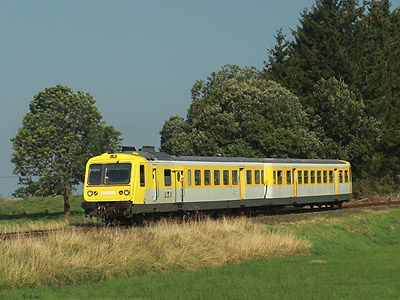

Les RGP version 
Stéphane Keller a reproduit la RGP 1 modernisée X 2737 téléchargeable sur simtrain-fr.com.
Ferrovia - 09 Juin 2012
X 2700 - RGP 1 - RGP 2
Les X 2700, plus souvent appelés RGP (Relations Grand Parcours) sont des autorails bi-caisses unifiés de
600 cv puis 825 cv formés d'une motrice X 2700 et d'une remorque XR 7700 équipée d'une loge de conduite. Exclusivement première classe, ils se chargeaient de trains parmi les plus prestigieux dans les années 1950. Leur livrée vert d'eau et crême, réhaussée d'enjoliveurs en aluminium les distinguait des autres autorails plus rustiques.
Deux séries fortement différentes forment la famille des RGP : les RGP 1 et les RGP 2. Aucun rapport avec la chronologie puisque les RGP 2 ont été construites les premières. En fait, le chiffre indique le nombre de moteurs qui animent la motrice. Les premières RGP sont directement dérivées des X 2400 et en reprennent la disposition mécanique : deux V12 Renault 517 de 300 cv chacun accouplés à une boite de vitesse mécanique. L'implantation est quelque peu différente puisque le second groupe moteur-boite est retourné pour ménager un couloir d'accès à la remorque. Parallèlement à l'évolution de l'X 2400 bi-moteur vers l'X 2800 monomoteur, la seconde série de RGP fut équipée d'un unique V12 MGO de 825 cv et d'une boite à convertisseur hydraulique Mékydro.
Les remorques XR 7700 présentent la particularité de posséder une loge de conduite décalée sur la gauche, le carénage central est amovible et un soufflet peut-être déplié. Deux rames RGP peuvent former une rame de quatre caisses (voire cinq en intercalant une troisième remorque) interconnectées.
Une sous-série de RGP 1 fut dédiée aux Trans Europ Express sur des relations internationales avec la Belgique, l'Allemagne, la Suisse et l'Italie. Numérotées X 2770, ces rames avaient une livrée spécifique, le vert d'eau étant remplacé par un rouge grenat.
Les RGP furent progressivement déclassées des trains les plus nobles au profit de rames tractées ou de Turbotrains. Elles étaient affectées à des trains automoteurs interrégionaux tels que la Flèche d'Argent ou l'Alpazur. La livrée adopta des coloris similaires aux RTG, orange et gris métallisé. L'intérieur fut réaménagé en deux classes.
Tout comme les X 2400, le coût d'entretien élevé des RGP 2 leur fut fatal dans les années 1980. Seules les X 2707 et 2714 furent conservées et fortement modifiées pour former la rame spéciale V4 d'auscultation des voies. Les RGP 1 ont en revanche bénéficié d'une rénovation lourde avec reconstruction intégrale des deux cabines de conduite. Les deux extrémités ayant désormais un aspect identique, l'intercirculation entre deux remorques fut supprimée.
Les RGP modernisées reçurent la nouvelle livrée TER jaune, bleue ou rouge en fonction de leur région d'affectation et se spécialisèrent dans les trains régionnaux sur les lignes montagneuses.
Quelques données techniques
Constructeur : Decauville puis Renault
Motorisation et transmission :
RGP2 : 2 x V12 Renault, boites de vitesse mécaniques à 4 rapports.
Puissance totale : 600 cv
RGP1 : V12 MGO turbocompressé, boite de vitesse automatique Maybach Mekydro à 4 rapports et convertisseur hydraulique.
Longueur : 52,680 m
Masse : 84,7t
Pour plus d'info :
Les fiches des RGP 2 (X 2700), RGP1 (X 2720) et RGP TEE (X 2770) sur Wikipedia
Fiche technique des RGP 1 de Florent Brisou
L'inventaire des X 2700 sur Trains du Sud-Ouest
L'X2709 ex-Quercyrail du CFHF ne peut cacher
sa parenté avec les X 2400 (26/09/2008)
Vue de l'XR 7719 (26/09/2008)
V4 à Paris-Vaugirard (29/01/2004)
L'X 2723 modernisée à Roanne (18/01/2004)
L'X 2728 modernisée quitte Lyon Part-Dieu (18/10/2003)

L'X 2725 préservée par le CFHA à Lugarde (22/08/2012)
Les RGP version 
Stéphane Keller a reproduit la RGP 1 modernisée X 2737 téléchargeable sur simtrain-fr.com.